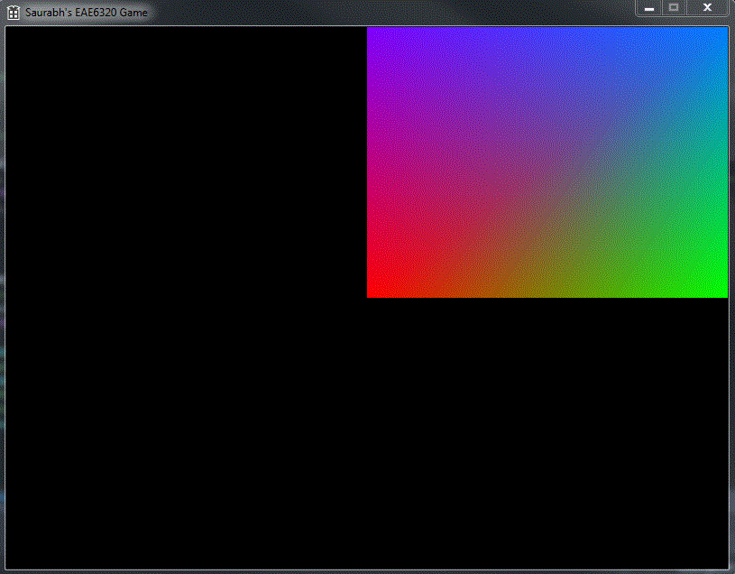

Vertex and Index Buffers
Assignment 03
This assignment was an extension of the previous assignment. This time we had to convert from the just having vertex buffers to having both vertex buffers and index buffers. This allowed us to add more data to the vertices and thus we had a colorful square. Also, we had to create a single, platform independent interface to a mesh, an entity encapsulating the vertex and index data. The image shows the output in Direct3D. Even though the output is same in OpenGL, we have to modify the vertex data to match the colors. Direct3D expects the color in (B,G,R,A) format while OpenGL requires it to be in the standard (R, G, B, A) format.

Vertex and Index Buffer
Without the index buffer, we needed 6 vertices to form the square. But with the index buffer, the minimum number of vertices required to form a square are 4. If we consider to be made of two triangles, which we consider as primitives, the number of indices required are 6 (three vertices per triangle and two triangles). The diagonal vertices are the same and shared between the two triangles. Using an index buffer in addition to a vertex buffer has its advantages:
- Reduce the size of vertex buffer.
- Allows us to add more data to the vertices without having to duplicate the data for the next primitive.
- The shape can easily be changed by changing the index values.
- Both Direct3D and OpenGL have optimized implementations for index buffer.
- Allows for smoother edges (with shared normals).
Mesh
I decided to use a class for the mesh, as I wanted the mesh to have some member methods and also because I am more comfortable using C++ classes instead of C structs. The class contains:
- The platform dependent vertex format.
- For OpenGL
- Vertex Array ID
- For Direct3D:
- Vertex Declaration
- Vertex Buffer
- Index Buffer
- Direct3D device (more on that later)
In my code, I decided to move all the code from Graphics.**.cpp to Mesh.**.cpp. After some discussions with some of my classmates, I realized that none of them had moved the complete code from the old file to the new one. But to defend what I did, I thought that we would have different vertex buffers and index buffers for each new mesh. Even though it will cost us some more computation time at the start and extra memory while initializing, it will save some time during rendering. The only concern was either Direct3D or OpenGL not allowing me to create multiple buffers. But after some testing and creating new mesh with same data, I was relieved that it caused no problems. I agree that it is a bit of excessive memory allocation and depending on what JP thinks, I might have to change it back. Some other thoughts about this was creating a singular vertex and index buffer and storing the starting positions of each in the mesh. I do not know how to do this in either OpenGL or Direct3D or whether it allows me to do so. Hence I decided to keep how it was.
Drawing the Mesh
As the Mesh is a class, we have to call the draw function which is a member function. The syntax is :
s_mesh->Draw().
This is the platform independent interface without any platform specific arguments passed to it. The OpenGL implementation of the draw call doesn’t require any other variables. But Direct3D needs a reference to Direct3DDevice. In order to not require passing it in the function call. To solve this problem, I created a static member for the mesh, as the reference to the device will not change over the course of the game. static IDirect3DDevice9* s_direct3dDevice;
To utilize this static variable, I needed to create two more static methods, to set the device and to reset it. static void SetDirect3dDevice(IDirect3DDevice9* i_direct3dDevice); static void ReleaseDirect3dDevice();
After discussions in the class, some other solutions were found. One of them which I liked was having a platform independent “context” struct. We can pass this struct variable to the draw call and we do not violate the requirements of the assignment.
Separating the graphics code.
When writing a separate interface for the mesh, it has a few advantages:
- Most of the programmers on a team do not need to worry about the platform specific code in other code which is not an interface. Then we can just call
Mesh->Draw()to invoke the draw function of the mesh, without worrying about which platform we are developing for. - It allows for faster future development of code by sacrificing some development time writing separate implementations of the interfaces.
- We can now draw multiple meshes witha single function call.s
Time Estimate
Reading: 1 hours
Coding: 4 hours
Testing and Fixes: 1 hour
Writeup: 1.5 hours
Download Links
Download Direct3D
Download OpenGL